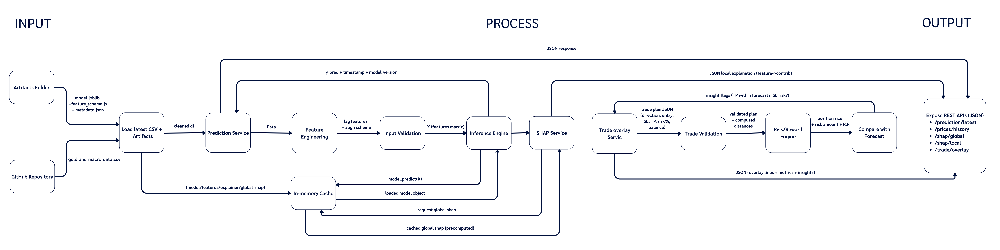

Student
Real-time daily gold price prediction web application
เว็บแอปพลิเคชันทำนายราคาทองคำรายวันแบบเรียลไทม์
Developers

Student
Panas
Project Advisor
Asst. Prof.
Palakorn Seenoi,Ph.D.
Project Advisor
Thanawan Chonnamdchai,Ph.D.
Abstract
Gold is widely regarded as a safe-haven asset, and accurate short-term forecasting can support trading and risk-management decisions. This study develops and evaluates one-step-ahead (t+1) forecasting models for daily gold prices, focusing on Gold_High, Gold_Low, and Gold_Close. The dataset combines daily market variables collected from Yahoo Finance (gold OHLC, gold volume, silver price, crude oil price, S&P 500 index, U.S. 10-year Treasury yield, and the U.S. Dollar Index) with macroeconomic indicators from Federal Reserve Bank of St. Louis via FRED (e.g., CPI). Macroeconomic series with lower frequency are aligned to the daily timeline using forward-fill to ensure consistent temporal indexing. A unified time-series evaluation protocol is applied to prevent data leakage: hyperparameters are tuned using time-series cross-validation on the initial training segment, the best configuration is refit on the combined train–validation set, and final performance is assessed using one-step-ahead walk-forward testing.
Models compared include ARIMA, linear regression, XGBoost, LightGBM, and LSTM. ARIMA parameters are selected via grid search, yielding ARIMA(0,1,1) as the best specification across targets, while XGBoost is optimized with Optuna and early stopping with alternative lag settings. Performance is measured using RMSE, MAE, MAPE, and R². Experimental results indicate that linear regression achieves the lowest test-set RMSE across all three targets (Gold_High: 27.09, Gold_Low: 30.65, Gold_Close: 39.01 USD/oz), with ARIMA remaining competitive for Gold_Close (RMSE 38.69). The best-performing model is intended for deployment in a web application to deliver accessible next-day gold price forecasts for end users.
Workflow
End-to-end workflow diagrams of the system
Real-time Updated Data Workflow

Model Training Workflow

Prediction Backend Workflow
Trade Plan Overlay Workflow

Systems Design
GRALD is designed as an end-to-end system that continuously maintains an up-to-date dataset, trains forecasting models under a leak-free time-series protocol, and serves next-day (t+1) predictions through a REST API. The system also includes an optional Trade Plan Overlay module that helps users quantify trading plans (risk/reward, position sizing) and visualize Entry/SL/TP on top of the price chart. The overall system is organized into four main workflows.
1) Real-time Updated Data Workflow (Data Pipeline)
- Inputs: Daily market variables from Yahoo Finance (e.g., gold OHLCV and related financial variables) and macroeconomic indicators from FRED.
-
Automation & Execution: GitHub Actions runs on a scheduled cron trigger and executes
gold_data_fetch.pyin a Python environment on a GitHub-hosted runner. - Merge + Frequency Alignment: All sources are merged using a shared Date index. Lower-frequency macro series (e.g., monthly) are aligned to the daily timeline using forward-fill so that every feature is available for each daily record.
-
Cleaning & Versioning: The pipeline performs data cleaning (missing values, column consistency, date formats)
and writes the updated dataset (e.g.,
gold_and_macro_data.csv) back to the repository via commit/push. - Output: A continuously updated dataset in the GitHub repository, ensuring downstream training and inference always use the latest available data.
2) Model Training Workflow (Training & Model Selection)
-
Data Loading & Validation: Load
gold_and_macro_data.csvand run basic quality checks (missing values, data types, date continuity, and scale sanity checks). - Preprocessing & Feature Engineering: Build a feature-ready dataframe; generate time-dependent features such as lag features, and construct one-step-ahead targets (t+1) for Gold_Close, Gold_High, and Gold_Low.
- Time-series Split + Walk-forward Validation: Use a time-ordered split (e.g., 70/15/15 train/val/test) and apply walk-forward rolling validation to prevent data leakage and better mimic real deployment conditions (train on past → validate on future windows).
- Training, Tuning, and Final Fit: Train multiple models / parameter sets across rolling windows; select the best hyperparameters per target; perform a final fit on Train+Val and evaluate on Test.
- Evaluation & Selection: Compare models using RMSE, MAE, MAPE, and R²; choose the best model per target (or a primary model for deployment).
-
Packaging Artifacts: Export deployment-ready artifacts:
model.joblib,feature_schema.json(required feature names + ordering), andmetadata.json(model version, training period, metrics, timestamp). - Output: An artifacts directory ready to be loaded by the prediction backend.
3) Prediction Backend Workflow (API + Inference + SHAP)
The backend is implemented as a prediction service that loads the latest dataset and the deployed artifacts, generates the correct feature matrix, and serves results through REST endpoints. It also provides SHAP explanations for model transparency.
Core Modules
-
Load Latest CSV + Artifacts: Load
gold_and_macro_data.csvand the deployed artifacts; validate schema compatibility to avoid feature mismatch at inference time. -
Feature Engineering: Construct the feature matrix X according to
feature_schema.json, matching training-time transformations (including lag features). - Input Validation: Validate request payloads and data formats before inference to prevent invalid requests.
-
Inference Engine: Run
model.predict(X)to compute next-day forecasts (t+1). - SHAP Service: Provide: Global SHAP (overall feature importance; typically precomputed and cached) and Local SHAP (per-request feature contribution for a specific prediction point).
- In-memory Cache: Cache model objects, feature lists, SHAP explainers, and global SHAP results to reduce latency and avoid repeated loading.
REST API Endpoints
- /prediction/latest — latest forecast (t+1) with timestamp and model_version
- /prices/history — historical time series for charting
- /shap/global — global SHAP summary
- /shap/local — local SHAP explanation for a requested point
- /trade/overlay — trade plan evaluation + overlay lines + risk metrics
Output: Structured JSON responses consumed by the frontend to render charts, dashboards, and explanations.
4) Trade Plan Overlay Workflow (Risk/Reward + Visualization)
This module allows users to input a trading plan and receive quantitative evaluation outputs (rather than trading signals). The output is visualized as an overlay on the price chart.
- User Inputs: Symbol (e.g., XAU/USD), direction (Buy/Sell), Entry, Stop Loss (SL), Take Profit (TP), account balance, and risk per trade (percentage or fixed amount).
- Trade Validation: Enforce trading logic constraints: Buy → SL < Entry < TP, Sell → TP < Entry < SL; reject invalid/negative/out-of-range inputs.
- Risk/Reward Engine: Compute risk distance |Entry − SL|, reward distance |TP − Entry|, risk/reward ratio (R:R), and position sizing based on the user’s risk setting. Generate insight flags (e.g., “TP within forecast range?”, “SL risk above threshold?”).
- Compare with Forecast + Render: Call /prediction/latest, compare plan vs forecast, and return JSON for rendering Entry/SL/TP lines, risk zones, and summary cards (risk amount, R:R, position size, insights).
- Output: An interactive dashboard with price chart overlay and numeric risk metrics for decision support.
5) Frontend Integration (Presentation Layer)
- Fetch historical prices for charting from /prices/history
- Display the latest next-day forecast from /prediction/latest
- Show explainability via /shap/global and /shap/local
- Accept trade plan inputs and visualize overlay outputs from /trade/overlay
The backend acts as the single source of truth for forecasting, calculations, and explanations, while the frontend focuses on visualization and user interaction.
6) Key Design Considerations
- Leakage prevention: time-series splitting + walk-forward rolling validation
- Reproducibility: versioned artifacts + metadata (training period, metrics, timestamps)
- Performance: in-memory caching for model/explainer/global SHAP to reduce latency
- Maintainability: clear separation of concerns across data, training, serving, and overlay pipelines
- Extensibility: add new models/features by updating artifacts and schema without changing the UI logic